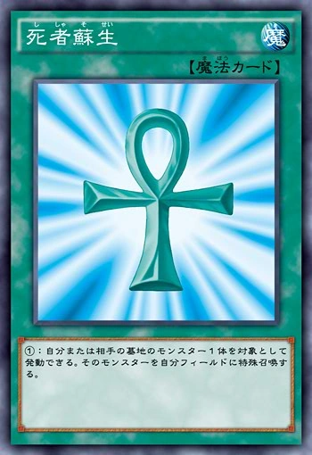
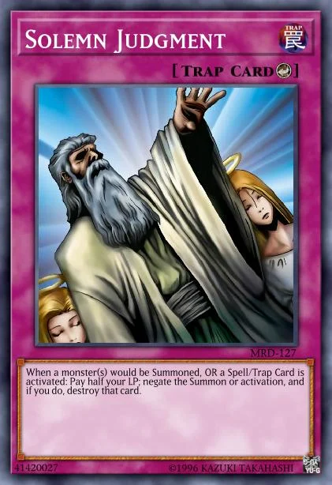

Yu-Gi-Oh! is a popular trading card game based on the Japanese manga and anime series of the same name, created by Kazuki Takahashi. In the game, players use decks of cards featuring monsters, spells, and traps to battle against each other, with the goal of reducing their opponent's life points to zero.
| Type | Definition | Card Outward |
|---|---|---|
| Monster | Used to summon creatures to attack or defend. Each Monster Card has various attributes like ATK (attack) and DEF (defense) points. Monsters are further classified by types (like Dragon, Warrior, Spellcaster) and attributes (like Fire, Water, Light). | |
| Spell | Used to perform actions during the game, like boosting a monster's strength, drawing extra cards, or destroying opponent’s cards. Spell cards are typically played during the player's turn. |  |
| Trap | These are usually set face-down and can be activated during the opponent’s turn, often to disrupt their plays. They can do things like negate an attack, destroy monsters, or change the battle outcome. |  |